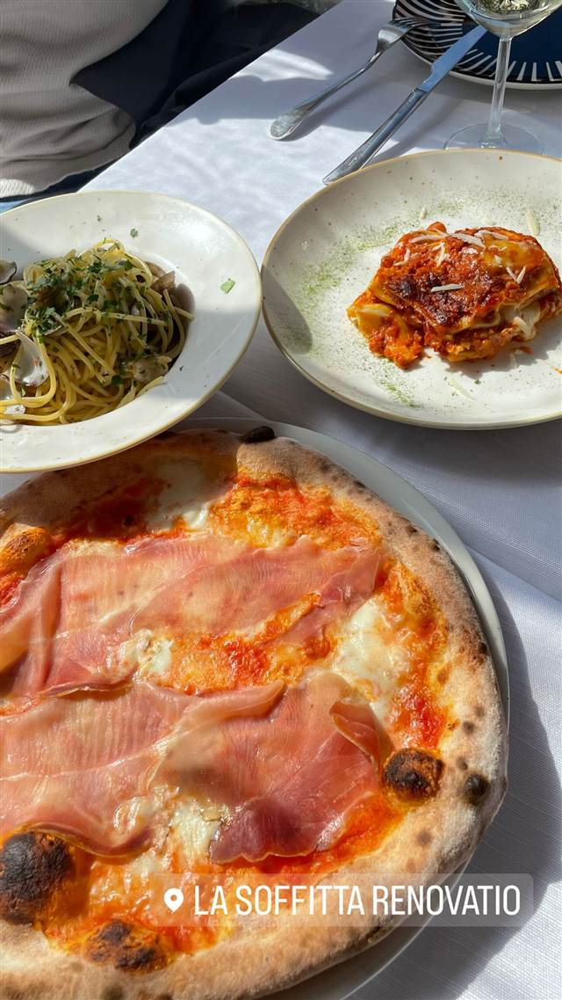

イタリアン · ピザ · バチカン
La Soffitta Renovatio
ローマに本格ナポリピッツァを初めて持ち込んだ一族の3代目が継ぐ味
LA SOFFITTA RENOVATIO
La Soffitta Renovatioは1908年からローマで飲食業を営むディ・ミケーレ一族が手がける店。1990年に一族がローマへ初めて本格ナポリピッツァを持ち込み、1995年の欧州ピザ職人選手権でも優勝。旧店舗の閉店を経て2006年にリソルジメント広場で新たに開業した。
TRIVIA
豆知識
- 一家は1908年からローマで飲食店を営む3世代続く老舗一族
- 1990年、ローマに本格ナポリピッツァを初めて持ち込んだのがこの一族の店
REVIEWS
世間の評判
4.4Googleマップ
欧州選手権優勝のもちもち生地
- 欧州ピザ選手権で優勝した柔らかくもちもちの生地を評価する声が多い
- グルテンフリーピザの完成度の高さを評価する声が多い
- チーズや羊肉を使ったローマ料理も美味しいという声がある
Yelp・Restaurant Guru 口コミ2936件
| 創業 | 現店舗は2006年開業（前身の店は1960年開業、系譜は1908年まで遡る） |
|---|---|
| 系譜 | ディ・ミケーレ一族3代にわたるローマの飲食業一家。1908年祖父アントニオがローマで店を開き、1960年に2代目がヴィッラ通りに「La Soffitta」を開店。1990年に3代目マッシモ＆ステファノ兄弟が同店1階で「Il Forno della Soffitta」を開き、ローマに本格ナポリピッツァを初めて持ち込んだ。2005年に旧店舗が閉店し、2006年に現在のリソルジメント広場店として再出発 |
| 看板 | 本格ナポリ風ピッツァ、ローマの伝統料理、グルテンフリーピッツァ |
| こだわり | ナポリ仕込みのピッツァ製法をローマに導入 |
| 掲載・評価 | 1995年ヨーロッパ・ピザ職人選手権で優勝 |
| どこから | 海外 |
| 場所 | メトロA線 Ottaviano駅 Piazza del Risorgimento 46/A, 00192 Roma, Italia |
食べたもの：ピザとパスタ
NEARBY
近い店・同じ系統の店
-
 ピザ 飯田橋駅・牛込神楽坂駅
400℃ PIZZA TOKYO
岡山本店直系、4日仕込みの高加水生地で焼く蜂蜜がけピッツァ
夜 ¥10,000～¥14,999
ピザ 飯田橋駅・牛込神楽坂駅
400℃ PIZZA TOKYO
岡山本店直系、4日仕込みの高加水生地で焼く蜂蜜がけピッツァ
夜 ¥10,000～¥14,999
-
 ピザ 恵比寿駅
L'Antica Pizzeria da Michele 恵比寿店
1870年創業のナポリ本店直伝、空輸チーズのマルゲリータ
昼 ¥2,000～¥2,999 夜 ¥4,000～¥4,999
ピザ 恵比寿駅
L'Antica Pizzeria da Michele 恵比寿店
1870年創業のナポリ本店直伝、空輸チーズのマルゲリータ
昼 ¥2,000～¥2,999 夜 ¥4,000～¥4,999
-
 ピザ 神谷町
Pizza 4P's Tokyo
ベトナム発、アジア30店舗超を経て麻布台に上陸した水牛モッツァレラのピザ
昼 ¥3,000～¥3,999 夜 ¥6,000～¥7,999
ピザ 神谷町
Pizza 4P's Tokyo
ベトナム発、アジア30店舗超を経て麻布台に上陸した水牛モッツァレラのピザ
昼 ¥3,000～¥3,999 夜 ¥6,000～¥7,999
-
 ピザ 中目黒駅
聖林館（セイリンカン）
マルゲリータとマリナーラの2種のみ、国産小麦を長期熟成
昼 ¥4,000～¥4,999 夜 ¥4,000～¥4,999
ピザ 中目黒駅
聖林館（セイリンカン）
マルゲリータとマリナーラの2種のみ、国産小麦を長期熟成
昼 ¥4,000～¥4,999 夜 ¥4,000～¥4,999
-
 ピザ 武蔵小山
La TRIPLETTA
開業10カ月でビブグルマンを獲得した本格ナポリピッツァ
夜 ¥4,000～¥4,999
ピザ 武蔵小山
La TRIPLETTA
開業10カ月でビブグルマンを獲得した本格ナポリピッツァ
夜 ¥4,000～¥4,999
-
 ピザ 白金高輪
タランテッラ ダ ルイジ（TARANTELLA da luigi）
マルゲリータ考案者の子孫に師事した店主のナポリピッツァ
昼 ¥1,000～¥1,999 夜 ¥6,000～¥7,999
ピザ 白金高輪
タランテッラ ダ ルイジ（TARANTELLA da luigi）
マルゲリータ考案者の子孫に師事した店主のナポリピッツァ
昼 ¥1,000～¥1,999 夜 ¥6,000～¥7,999